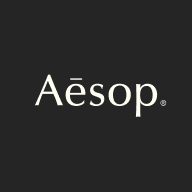

大部分是往季余货
官方说法比斯特发言人说，大部分货品是正价店卖剩的 surplus stock，也就是往季款、过季颜色和尺码不全的款。2013 年有媒体实地看到 Celine SS12 上衣 £190（原价 £475）、Mulberry Del Rey £626（原价 £895）。
平时就是奥莱价，大促期间部分精品店会在 Village Price 上再打折。下面按时间排好了接下来的活动，官网条款写明的标“已确认”，按往年推的标“按往年推测”。每条附来源和查询日期，出发前再看一眼官网。
Bicester Village（比斯特购物村）在牛津郡 Bicester 镇边上，是一座露天的奢侈品奥特莱斯：一条步行主街，两边是一栋栋白色尖顶小屋，每栋是一家品牌直营的折扣店。1995 年 4 月开业时只有 13 家店，现在官网写着 150 多个品牌。
运营方是 Value Retail，旗下还有法国 La Vallée、意大利 Fidenza、爱尔兰 Kildare 等购物村，统称 The Bicester Collection。它是中国游客在英国去得第二多的地方，仅次于白金汉宫，所以车站和列车上有普通话广播，店里有会说中文的店员。
来源：Wikipedia；官网品牌页 2026-10-16 访问；主街长度见 WWD 2025-05-01；访客量见 Goldthread 2018-12-25，近年数字官方没公布；普通话服务见 China Daily 2018-10-04，现状以到店为准。
同一只包，中国定价普遍比欧洲高：Celine Triomphe 帆布托特贵约 40%，Bottega Veneta Cabat 贵约 42%，LV Neverfull 贵约 30%（Retviews 统计，FashionNetwork 2023-03-23）。奥莱价再在英国零售价上打折。
英国一线大牌折扣店最全的购物村，Gucci、Prada、Dior、Saint Laurent、Balenciaga、CELINE、LOEWE 都在；其他奥莱以轻奢和大众品牌为主，见下面的对比表。
每家店都是品牌自己开的，货从品牌渠道来，和代购、二手平台比，不用担心真假。
银联卡全场可用，银联 VIP 再打 9 折；早年报道称近 20 家店收支付宝和微信支付（China Daily 2018），官网有中文版。
英国从 2021-01-01 起取消了游客退税，买了带回国不能退 20% 增值税（ICAEW）。带回国超过 5000 元免税额度要申报交行邮税，“比国内便宜”要扣掉这部分再比。
| 购物村 | 在哪 | 店铺数 | 品牌档次 | 官网折扣说法 |
|---|---|---|---|---|
| Bicester Village | 牛津郡，伦敦火车约 1 小时 | 150+ | 一线奢侈品最全：Gucci、Prada、Dior、Burberry、Saint Laurent、FENDI、CELINE | 每天低至 6 折，大促低至 3 折 |
| Cheshire Oaks | 英格兰西北，离利物浦、曼彻斯特车程不到 1 小时 | 140+ | 中高端，有 Burberry，没找到 Gucci、Prada、Dior 折扣店 | 低至 4 折 |
| Ashford Designer Outlet | 肯特郡 | 120+ | 中高端：Coach、Sandro、Maje | 未核实 |
| Clarks Village | 萨默塞特郡 | 75+ 家店，90 个品牌 | 大众和中端 | 低至 4 折 |
| London Designer Outlet | 伦敦 Wembley，地铁可到 | 约 50 家奥莱店 | 大众：Nike、Gap、Guess | 至少 7 折，部分低至 3 折 |
| Livingston Designer Outlet | 苏格兰，爱丁堡西边 | 70+（含餐饮） | 中端：Ted Baker、Kurt Geiger、Lacoste、Le Creuset | 只写“低于建议零售价” |
| Caledonia Park | 苏格兰和英格兰交界的 Gretna，原名 Gretna Gateway | 50+ | 中端：Polo Ralph Lauren、BOSS、kate spade | 低至 3 折 |
结论：冲一线大牌只有比斯特；在苏格兰读书只想买 Ralph Lauren、BOSS、Le Creuset 这类中端牌，Livingston 和 Caledonia Park 近得多。来源：Cheshire Oaks 官网、Ashford、Visit Somerset、London Designer Outlet、Visit West Lothian、Scotland Starts Here，均 2026-10-17 访问。
比斯特发言人说，大部分货品是正价店卖剩的 surplus stock，也就是往季款、过季颜色和尺码不全的款。2013 年有媒体实地看到 Celine SS12 上衣 £190（原价 £475）、Mulberry Del Rey £626（原价 £895）。
同一篇报道里，比斯特也承认有部分货是用往季面料专门为奥莱生产的。这类货正价店从没卖过，“原价”参考意义不大，做工可能也不如主线。
怎么分辨：用吊牌货号到品牌官网搜，搜不到的多半是专供款；包和鞋重点看五金、走线和内衬。
疫情前比斯特就开始卖当季畅销款，2024 年当季商品销售增长 40%；每年最多换掉 15% 的品牌。当季款通常不打折，或者不参加 Winter Event 这类额外折扣。
经典款不受季节影响的：风衣、羊绒围巾、大衣、皮鞋、小皮件；美妆护肤（官网 L'Occitane 低至 3 折、Aesop 低至 4 折）；Le Creuset 这类厨具。
大牌的爆款包、当季新款基本不打折甚至没货；标着“经典款”但官网搜不到的；电器（英标插头、电压和保修）。各品类具体能省多少，目前没有可靠的系统对比，以上是常见经验，按需判断。
Prada、Gucci、Dior、Saint Laurent、Balenciaga、Bottega Veneta、CELINE、LOEWE、FENDI、Givenchy、Valentino、Versace、Dolce & Gabbana、Miu Miu、Chloé、Moncler、Loro Piana、Brunello Cucinelli、ZEGNA
Burberry、Mulberry、Barbour、Vivienne Westwood、Paul Smith、dunhill、Hackett London、Charles Tyrwhitt、Holland Cooper、Reiss、AllSaints、Self-Portrait、RIXO、N.Peal、Orlebar Brown，Belstaff 即将开业
Coach、Michael Kors、kate spade、Tory Burch、Marc Jacobs、Longchamp、Acne Studios、Ami Paris、GANNI、Golden Goose、Isabel Marant、Maje、Sandro、ba&sh、KENZO、Stone Island、ZIMMERMANN
Arc'teryx、Canada Goose、The North Face、Moose Knuckles、lululemon、On、New Balance、Under Armour、Sweaty Betty、Vuori、Timberland、Birkenstock、UGG
Charlotte Tilbury、Jo Malone London、Aesop、Byredo、Creed、Penhaligon's、Guerlain、Clarins、ELEMIS、L'Occitane、Molton Brown、Acqua di Parma、Augustinus Bader、The Cosmetics Company Store（雅诗兰黛集团）
Le Creuset、Emma Bridgewater、The White Company、ZWILLING、Villeroy & Boch、Dyson、Bang & Olufsen、TUMI、Samsonite、Fortnum & Mason；Breitling、TAG Heuer、Bremont、Montblanc、Swarovski、Pandora、Monica Vinader
来源：Bicester Village 品牌页 · 2026-10-16 访问。条目里含餐厅和快闪店，品牌进驻会变，出发前再查一次。
英伦风衣的代表，格纹围巾和 Trench 风衣是来比斯特的热门目标。
英国本土皮具牌，Bayswater、Alexa 等经典包款，皮质耐用。
乡村风蜡棉夹克，英国人从年轻穿到老，适合格拉斯哥的雨天。
土星 LOGO 项链和耳钉最受欢迎，送礼不出错。
Baguette、Peekaboo 包和双 F 老花，官网写的是大牌里折扣力度较大的一档。
成衣、皮具和小皮件，男装卫衣是常见目标。
中国游客排队最多的几家。官网优惠页没列它们的折扣，周日 12:00 才开始营业。
101801 等经典驼色大衣，冬天来的人多。
极地级羽绒服，英国冬天穿偏厚，买给国内北方的家人更划算。
Nuptse 羽绒服、冲锋衣，学生党常买的户外入门款。
始祖鸟，官网列为新开店。国内溢价高，值得进去比价。
瑜伽裤和 Align 系列，奥莱款以往季颜色为主。
伦敦起家的高跟鞋牌，婚鞋、晚宴鞋常见。
Pillow Talk 唇膏、修容盘，英国本土彩妆。黑五常有店内专属价。
祖玛珑，官网列为新开店，蓝风铃、英国梨香型常见。
潘海利根，兽首系列香水，英国老牌香氛。

洗手液、身体乳和香薰，送礼和自用都常见。
欧舒丹护手霜、身体护理，官网列的是全村折扣最大的一档。
酷彩珐琅铸铁锅，奥莱常有瑕疵款和停产色，自己做饭的留学生可以看。
吹风机、卷发棒，官网列为新开店。注意英标插头和电压。
“低至 N 折”是官网写的 up to 折扣，按原价（ORP）计，只覆盖部分款。来源：Bicester Village Latest Offers · 2026-10-16 访问；品牌介绍为常识整理，不代表店内一定有对应款。
Mid-season Sale，多数品牌低至 5 折（按原价）
已确认Winter Event：会员在 Village Price 上最高再减 20%
已确认冬季 Extraordinary Sale 开始
按往年推测Grand Finale，大促价上再减 10%
按往年推测Spring Savings，最高额外 20% off
按往年推测10 月 23 日至 11 月 1 日，每天 9:00–19:00。会员（Level 1 起，注册即是）在参与活动的精品店，部分商品按 Village Price 最高再减 20%。
注意：不能和 UNiDAYS、银联 9 折叠加，只能选一个。不含 ICON 常青款、2026 新款和已经在打折的商品；先到先得，一单一店。
10 月 2 日至 18 日，还剩最后几天。AllSaints、Balmain 等多数品牌低至 5 折，Bremont、Brioni 低至 4 折，均按原价（ORP）算。
附加：扫会员码单笔满 £500 可参加 InterContinental 伦敦酒店住宿抽奖。
官网写的是每天最高 40% off，也就是低至 6 折：Brioni、L'Occitane 低至 3 折，FENDI、Givenchy、Aesop 低至 4 折，Canada Goose、Max Mara、Jimmy Choo、The North Face 等低至 5 折，Burberry、New Balance 在 Village Price 上最高再减 30%。
提示：“up to” 只代表部分款，到店价以吊牌为准。
各家条款都写了“不能和其他优惠叠加”，一笔只能用其中一个。结账前比一下哪个省得多再出示。会员积分和 Railcard 不受影响，可以照用。
来源：UNiDAYS、The Bicester Collection 银联礼遇、会员计划（星星 2027-02-28 过期）、Railcard 官网（£35/年），均 2026-10-16 访问。UNiDAYS 页面没写明适用门店范围，到店先问店员。
官网写明一笔消费不能同时向多家航空伙伴领取，携程和它们在同一份伙伴名单里。按“领了携程就不领 BA Avios、亚洲万里通等里程”来准备，登记时再跟礼宾台确认。
携程（CTRIP）会员在 Bicester Village 和 The Bicester Collection 旗下购物村消费，可拿 1% 返现，2026 年 12 月 31 日前有效。买 £500 大约返 £5。
注意：网上有攻略说“最高 2%”，官网写的是 1%，以官网为准。
不能线上申请，要本人到店领。带上携程会员码、所有购物小票和付款用的那张卡，去 Concierge 礼宾台、Concierge Kiosk 或火车站旁的 Information Hub 登记。官网建议购物当天就去。
技巧：逛完最后一家店再统一去登记，小票别扔。
参考法国 La Vallée 的携程流程，小票、银行卡和携程会员信息上的姓名要一致；用支付宝或微信付的，要截图付款记录。
建议：结账就用自己名下的卡，别让朋友代付。
注意：这段不能刷 Oyster 或 contactless，要在 Chiltern 官网或 App 先买票（官网不收手续费）。别去 Paddington 或 Euston，是 Marylebone 站。
Marylebone 线周末偶尔停运，例如 2026-09-12、13 日没有直达车，官网当时建议坐替代巴士或走这条线。出发前一周查一下 Chiltern 的施工日历。
技巧：Advance 票越早买越便宜，用 Railcard 再减 1/3。买到 Bicester Village 的联程票，牛津换车不用出站。
大巴到牛津约 4.5–5 小时，票价比火车低不少，适合不赶时间的周末。S5 在牛津市中心 Magdalen Street 上车。
注意：King's Cross 和 Marylebone 是两个站，伦敦段要刷 Oyster 或 contactless，到了 Marylebone 再用火车票。
到牛津约 3–4 小时，不用在伦敦换地铁。更省钱的是 National Express 大巴到伦敦 Victoria，单程 £9.49 起，约 3.5–4 小时，再转去 Marylebone。
建议：当天来回太赶，前一晚到伦敦住下，第二天一早从 Marylebone 出发，逛完再回伦敦。
到牛津约 5 小时 45 分–6 小时，换 1–3 次车，参考票价 £80 起，但不用拖着箱子在伦敦换站。
大巴单程 £19 起，睡一晚到伦敦，上午就能到购物村。Victoria 直达比斯特的大巴目前暂停，只能转火车。
从 Marylebone 和牛津来的车停 Bicester Village 站，出站就到。从伯明翰 Moor Street 来的 Chiltern 停 Bicester North，要再坐接驳巴士，每 30 分钟一班，单程 £3.70。来源：Chiltern。
16-25 Railcard £35/年，26 岁以上全日制学生也能办；26-30 Railcard £35/年，只能网上买。两张都减 1/3，Advance 票也能用。来源：Railcard 官网。
官网写明 Shopping Express 和 National Express 直达比斯特的大巴目前都暂停，攻略里写的“£7 大巴”现在坐不了。来源：官网交通伙伴页。
北方城市可以先问学生会和学联有没有黑五团车，例如利兹大学学生会 2026-11-28 有比斯特黑五一日游大巴。来源：Leeds University Union。
票价随日期和购票时间浮动，“起”价是平台上见过的最低价；Trainline、Omio 是第三方票务平台，数据只作参考，以购票时为准。全部 2026-10-17 访问。
旅客购物退税 2021 年就取消了，现在只有店家直接把货寄到海外才免增值税。别按“退税后更便宜”算价格。来源：ITV 2026-09-21。
“off ORP”按原价算折扣，“off Village Price”是在奥莱价上再减。Winter Event 和 Spring Savings 属于后者，力度更实在。
10 月周一到周五 9:00–20:00（10-26 起到 21:00），周六 9:00–21:00，周日 10:00–19:00；Burberry、Dior、Gucci、Prada 等周日 12:00 才能买，18:00 关。来源：官网营业时间。
Winter Event 的额外折扣只给会员，星星也不能事后补。出门前注册好，结账前先出示会员码。